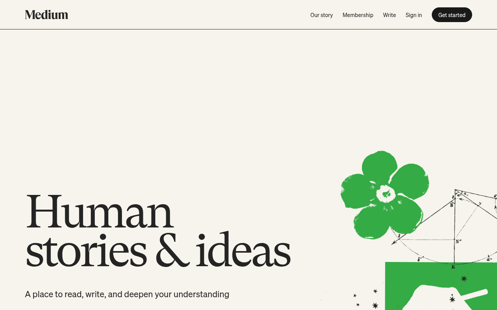

Design System Report
Medium — 실제 CSS 기반 분석
medium.com의 디자인 시스템 분석 — 그린(#1A8917) CTA, serif 기사 본문, 흰 배경의 독서 중심 미학.

Quick Start
5분 안에 Medium처럼 만들기
1 · 폰트
body {
font-family: "Sohne",
"Helvetica Neue",
Helvetica, Arial, sans-serif;
font-weight: 400;
}
2 · 배경 + 텍스트
:root {
--bg: #FFFFFF;
--fg: #242424;
}
body {
background: var(--bg);
color: var(--fg);
}
3 · 브랜드 그린
:root {
--brand: #1A8917;
}
/* 기사 본문 */
.article {
font-family: "Charter",
Georgia, serif;
font-size: 20px;
line-height: 1.75;
}
절대 하지 말아야 할 것 하나: 기사 본문에
sans-serif 폰트를 쓰는 것. Medium의 정체성은 Charter(serif) 20px 본문이다. sans로 바꾸면 Medium다움이 사라진다.
Source
medium.com
React SPA
Fetched
2026.04.13
CSS + 브랜드 지식 보완
Primary Font
Sohne
UI · body weight 400
Brand
#1A8917
Follow · Subscribe CTA
01 · Provenance
출처와 수집 기준
URL · fetch 시점 · 파싱 방식.
Source URL
https://medium.comFetched2026-04-13
CSS 추출희박 (Webpack 번들 난독화) — #313131 1개만 파싱됨
Token prefix없음
MethodCSS 파싱 + 브랜드 지식 보완 · AI 추론 최소화
02 · Tech Stack
테크 스택
프레임워크, 디자인 아키텍처, 폰트 로딩.
FRAMEWORK
React SPA (custom bundler)
DESIGN SYSTEM
인-하우스 (공개 DS 없음)
CSS ARCHITECTURE
CSS Modules (hashed classname) — 토큰 미노출
DEFAULT THEME
Light — 흰 배경
#FFFFFF, 그린 CTAFONT LOADING
자체 호스트 — Sohne (UI), Charter (기사 본문)
READING UX
기사 본문 max-width
740px, Charter 20px serif03 · Typography
타이포그래피
2-레이어 폰트 — UI(Sohne) + 기사 본문(Charter serif).
Font stack
UI 폰트
Sohne — Klim Type Foundry · 유료 · weight 400기사 본문
Charter (Bitstream) 또는 GT Sectra — serif · 20px · 1.75Weight 정의normal = 400 · bold = 700
대체재UI →
Inter · 본문 → Lora 또는 Source Serif 4핵심 원칙: 기사 본문 폰트를 sans로 바꾸면 Medium 정체성이 사라진다.
Charter 또는 동급 serif만 사용.Typography Scale
Hero
Hero TitleSohne · 46–60px · 700
line-height 1.1
line-height 1.1
기사 제목
Article H1Sohne · 28–36px · 700
line-height 1.2
line-height 1.2
본문 기사 텍스트 (Charter)
Article BodyCharter/serif · 20px · 400
line-height 1.75 · letter-spacing -0.003em
line-height 1.75 · letter-spacing -0.003em
UI Body
UI BodySohne · 14–16px · 400
line-height 1.5
line-height 1.5
LABEL
Label / TagSohne · 12px · 500
uppercase · letter-spacing 0.02em
uppercase · letter-spacing 0.02em
04 · Colors
컬러
그린 단색 CTA + 따뜻한 흰-회색 팔레트.
Brand Green
CTA Green#1A8917
Hover#156012
Green Tint#E6F2E6
Neutral
White#FFFFFF
Card BG#F9F9F9
Border#E6E6E6
Muted#757575
Ink#242424
Semantic Roles
Page BG
#FFFFFF
body 기본 배경
CTA Primary
#1A8917
Follow · Subscribe 버튼
Ink
#242424
본문 텍스트 (warm near-black)
Text Muted
#757575
부제목, 날짜, 읽기 시간
05 · Spacing
스페이싱
8px 기반 그리드 — 기사 본문 max-width 740px.
xs4px
sm8px
md16px
lg24px
xl32px
2xl48px
3xl64px
article-max740px
06 · Radius
라디우스
pill 형태 버튼 + 소프트 카드 레이아웃.
sm
2px
태그·배지
태그·배지
md
4px
버튼
버튼
lg
8px
카드
카드
full
100px
Follow pill
Follow pill
07 · Shadows
섀도우
라이트 배경에 미세한 depth 표현.
card
기사 카드 hover
0 2px 8px rgba(0,0,0,.06)
dropdown
드롭다운 메뉴
0 4px 16px rgba(0,0,0,.12)
sticky-nav
스크롤 네비게이션
0 1px 0 rgba(0,0,0,.1)
08 · Motion
모션
미세하고 부드러운 전환.
duration-fast150mshover · focus 전환
duration-base250ms카드 트랜지션
easingease대부분 애니메이션
10 · Components
컴포넌트
팔로우 버튼, 기사 카드, 토픽 태그.
btn-follow팔로우 / 구독 CTA — pill 형태 그린 버튼
.btn-follow {
background: #1A8917;
color: #FFFFFF;
font-size: 14px; font-weight: 500;
padding: 8px 16px;
border-radius: 100px; /* pill */
border: none;
transition: background 150ms ease;
}
.btn-follow:hover { background: #156012; }
배경 #1A8917hover #156012반경 100px (pill)weight 500전환 150ms ease
article-card기사 목록 카드
The future of collaborative writing tools
Tom Warren · 5 min read · Apr 13
.article-card {
display: grid;
grid-template-columns: 1fr auto;
gap: 24px;
padding: 20px 0;
border-bottom: 1px solid #E6E6E6;
}
.article-card__title {
font-size: 20px; font-weight: 700;
color: #242424; line-height: 1.3;
}
.article-card__meta {
font-size: 13px; color: #757575; margin-top: 8px;
}
레이아웃 2-col grid구분선 border-bottom 1px #E6E6E6제목 700 · #242424메타 13px · #757575
11 · Content Voice
라이팅 원칙
독자 중심, 지식 공유 플랫폼의 보이스.
헤드라인
명사형 또는 호기심 유발형. "How X changes Y".
"The future of AI in writing is more human than you think"
CTA
단순 동사. 무엇을 얻는지 명확히.
"Follow" / "Subscribe" / "Sign up"
Byline
작성자 · 읽기 시간 · 날짜 순서.
"Author · 5 min read · Apr 13"
토픽 태그
소문자 · 2–3 단어 최대.
"artificial intelligence" / "product design"
12 · CSS · Tailwind
코드 익스포트
즉시 사용 가능한 CSS 변수 세트.
/* Medium — Drop-in CSS */ :root { --brand: #1A8917; --brand-hover: #156012; --brand-tint: #E6F2E6; --bg: #FFFFFF; --bg-card: #F9F9F9; --ink: #242424; --fg-muted: #757575; --border: #E6E6E6; --radius-pill: 100px; } body { font-family: "Sohne", "Helvetica Neue", Helvetica, Arial, sans-serif; font-weight: 400; background: var(--bg); color: var(--ink); } .article-body { font-family: "Charter", Georgia, "Times New Roman", serif; font-size: 20px; line-height: 1.75; letter-spacing: -0.003em; max-width: 740px; margin: 0 auto; }
// tailwind.config.js — Medium module.exports = { theme: { extend: { colors: { brand: '#1A8917', 'brand-hover': '#156012', ink: '#242424', 'text-muted': '#757575', 'bg-card': '#F9F9F9', border: '#E6E6E6', }, fontFamily: { sans: ['"Sohne"', 'Helvetica', 'Arial', 'sans-serif'], serif: ['"Charter"', 'Georgia', 'serif'], }, maxWidth: { article: '740px' }, borderRadius: { pill: '100px' }, }, }, }
13 · Do / Don't
Do / Don't
Medium 디자인에서 지킬 것과 피할 것.
✓ DO
- 기사 본문은 serif (Charter/Georgia) — 가독성이 Medium 핵심
- CTA 버튼은 pill 형태 (border-radius 100px)
- 텍스트는 #242424 — 순흑 아닌 warm near-black
- 그린(#1A8917)은 CTA 전용 — Follow, Subscribe
- 기사 본문 font-size 최소 20px + line-height 1.75
✗ DON'T
- sans-serif로 기사 본문 쓰지 않는다 — 정체성 파괴
- 그린을 배경으로 전면 사용하지 않는다 — 포인트 컬러
- 본문 font-size 16px 이하로 줄이지 않는다
- border-radius 0로 버튼 각지게 만들지 않는다
- 다크 배경을 기본으로 쓰지 않는다 — 라이트 우선